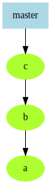
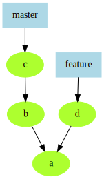
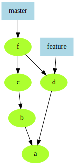
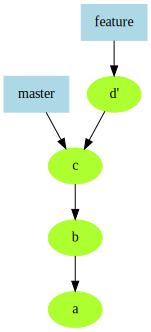
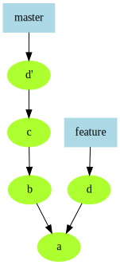

Branching and Merging
Visualizing history
::::::::: {.columns} ::: {.column width="30%"}  ::: ::: {.column width="70%" .textcolumn} git log --graph --oneline
* 5567e85 (HEAD -> master) My third git commit
* df5a1e0 My second git commit
* d3a1a32 My first git commit
::: :::::::::
Branching off
::::::::: {.columns} ::: {.column width="30%"}  ::: ::: {.column width="70%" .textcolumn} git branch feature master~2 git checkout feature $EDITOR; git commit -a
* 16ae900 (feature) Commit on feature branch
| * 5567e85 (master) My third git commit
| * df5a1e0 My second git commit
|/
* d3a1a32 My first git commit
::: :::::::::
Merging
::::::::: {.columns} ::: {.column width="30%"}  ::: ::: {.column width="70%" .textcolumn} git checkout master git merge feature ::: :::::::::
Merge conflicts
Git merges histories of the entire repository; until all conflicts are resolved and committed, the merge is "in progress" for all files.
- You can abort a merge in progress with `git merge --abort`
Rebasing
::::::::: {.columns} ::: {.column width="30%"}  ::: ::: {.column width="70%" .textcolumn} git checkout feature git rebase master ::: :::::::::
Cherry-picking
::::::::: {.columns} ::: {.column width="30%"}  ::: ::: {.column width="70%" .textcolumn} git checkout master git cherry-pick feature ::: :::::::::
Merge/Rebase/Cherry-pick
::::::::: {.columns} ::: {.column width="25%"} ::: ::: {.column width="25%"} ::: ::: {.column width="25%"} ::: ::: {.column width="25%"} ::: :::::::::